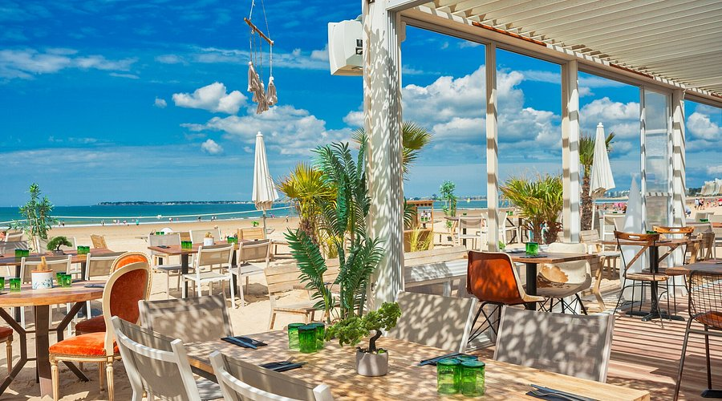
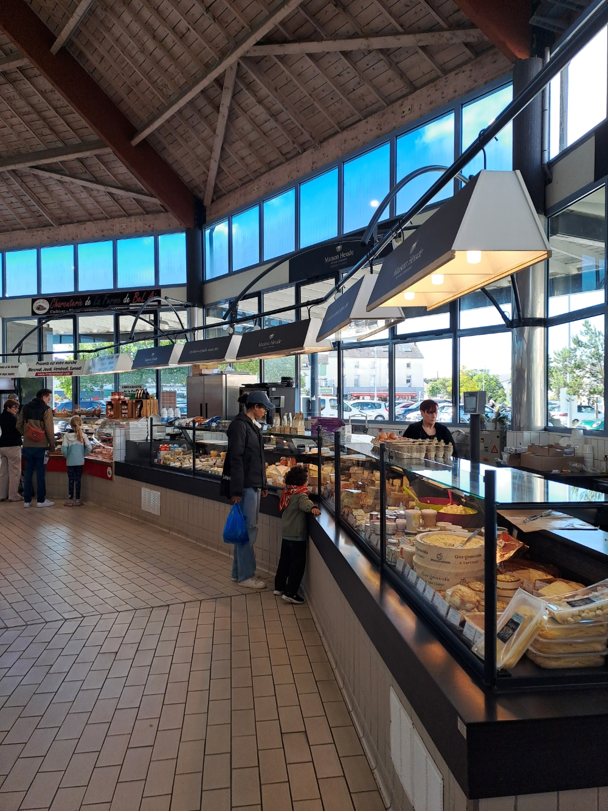

Restaurants et gastronomie
Pornichet et ses environs offrent une belle diversité de restaurants où vous pourrez déguster les spécialités locales, notamment les fruits de mer frais et les plats traditionnels de la région.
- Restaurants de fruits de mer face à la mer (les sablons valent le détour).
- Crêperies bretonnes authentiques (rendez-vous chez "mamie Nenette" au Pouliguen !).
- Brasseries et bistros conviviaux (les Copains d'abord sont à quelques minutes à pied. Vous pouvez aussi vous laissez tenté par un verre au Bidule, véritable institution Pornichétine).
- Restaurants gastronomiques à La Baule (La mare aux oiseaux pour pour découvrir une cuisine inventive et pleine de surprises).
- Cafés et glaciers sur le front de mer (Hedgard est le rendez-vous des amateurs de glaces sur le front de mer...)
- Boulangeries et pâtisseries artisanales
- Marché local avec produits frais et un grand choix de poissons et crustacés.

